사람없는 공간,
무인상점
2020년, 편의점 4사의
무인편의점 개수는
499
개였다.
무인상점 이용 경험
- “있다”
10명 중
9명
 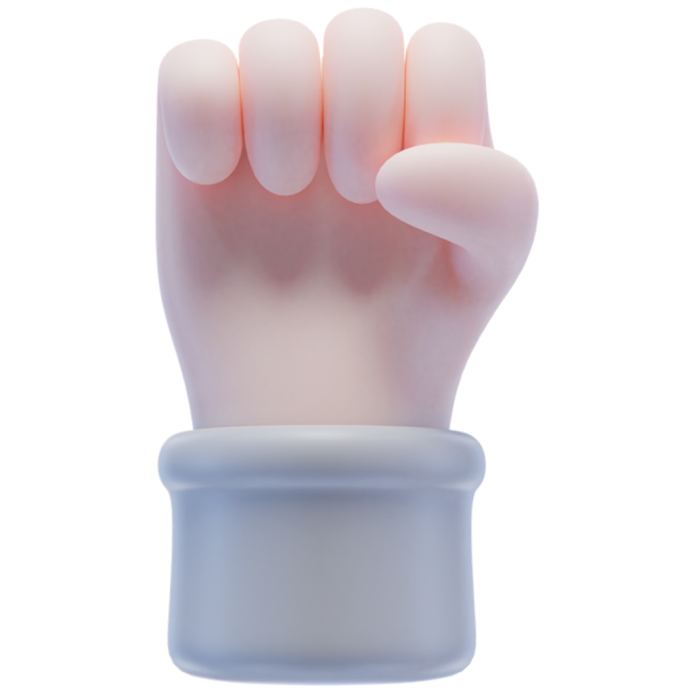
무인상점,
왜 늘어나고 있는걸까?
무인상점이 생겨나는 이유
인건비 및 부대비용 감소 효과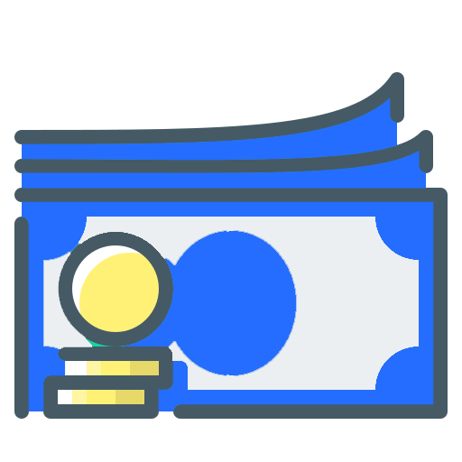 시간 제약을 받지 않는 운영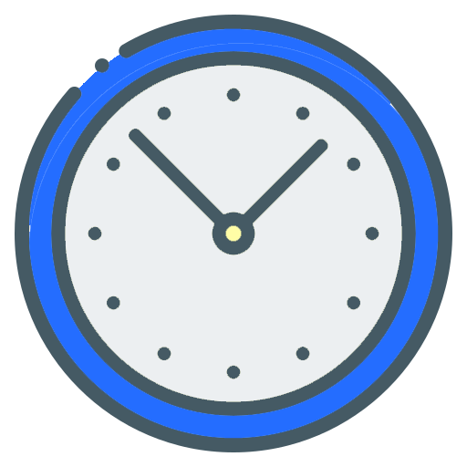 비대면 거래 선호 현상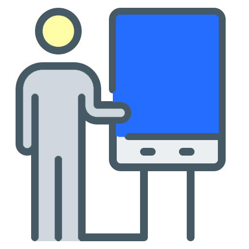 상품 구매 과정의 단순화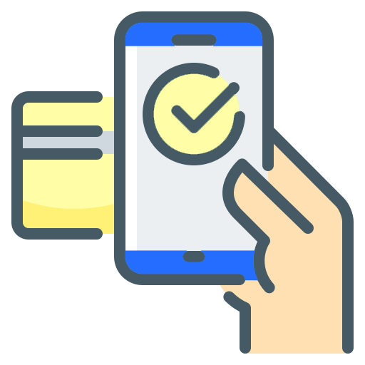 인건비 및 부대비용 감소 효과 시간 제약을 받지 않는 운영 비대면 거래 선호 현상 상품 구매 과정의 단순화
인건비 및 부대비용 감소 효과 시간 제약을 받지 않는 운영 비대면 거래 선호 현상 상품 구매 과정의 단순화 인건비 및 부대비용 감소 효과 시간 제약을 받지 않는 운영 비대면 거래 선호 현상 상품 구매 과정의 단순화
무인상점을 이용하는 이유
상품이나 서비스가 상대적으로 저렴 원하는 시간대에 이용 가능 가까운 거리 직원의 눈치를 보지 않고 비대면으로 편한 이용 상품이나 서비스가 상대적으로 저렴 원하는 시간대에 이용 가능 가까운 거리 직원의 눈치를 보지 않고 비대면으로 편한 이용
상품이나 서비스가 상대적으로 저렴 원하는 시간대에 이용 가능 가까운 거리 직원의 눈치를 보지 않고 비대면으로 편한 이용 상품이나 서비스가 상대적으로 저렴 원하는 시간대에 이용 가능 가까운 거리 직원의 눈치를 보지 않고 비대면으로 편한 이용
무인상점의
편의성과 경제성
소비자의 니즈를 충족시키고
규모를 늘려가고 있다.
하지만 무조건
무인상점에 대한 선호도가
높은 것은 아니었다.
인간이 제공
하는
서비스 및 전문적인 기술이
필요한 업종들은
 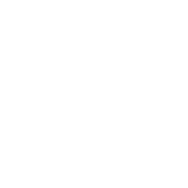  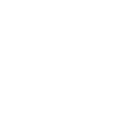
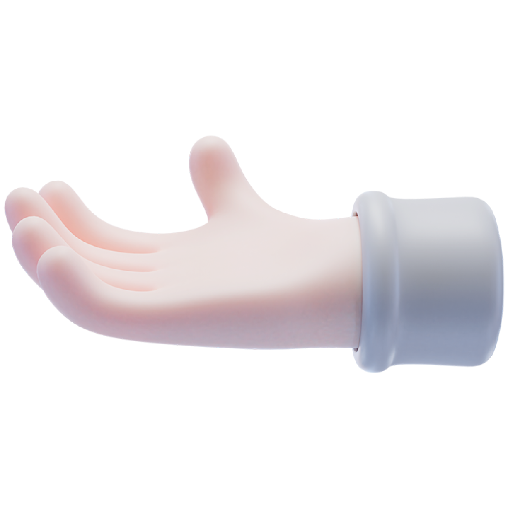
무인상점으로 대체하기까지
시간이 더 필요하거나
혹은 아예 대체가 되지 않을 수도 있다.
지역 별 무인상점 현황
# 2023년 기준
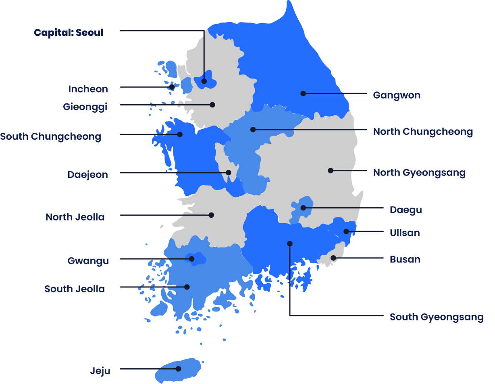